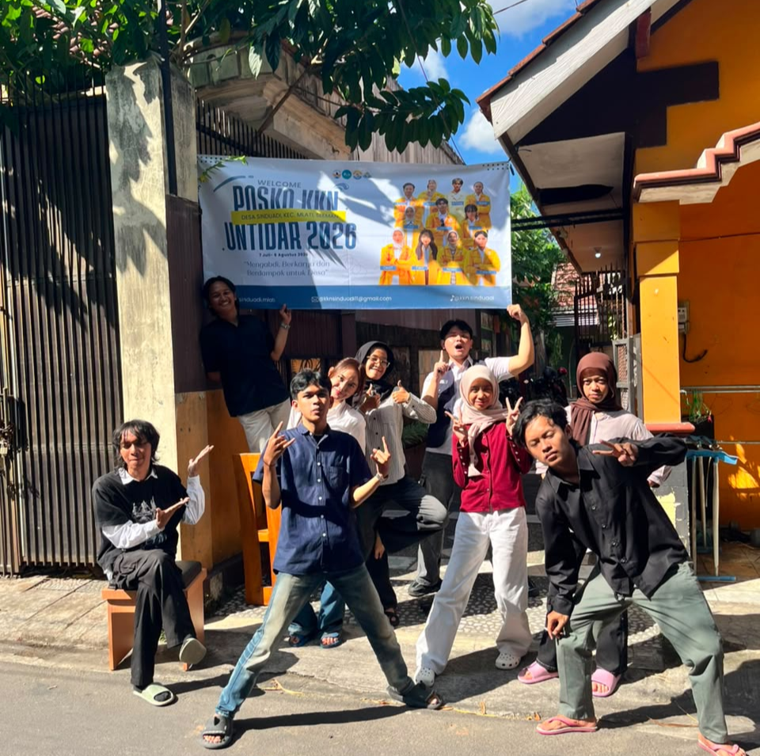

<!DOCTYPE html>
<html lang="id">
  <head>
    <meta charset="UTF-8" />
    <meta name="viewport" content="width=device-width, initial-scale=1.0" />
    <meta name="theme-color" content="#1f2a6b" />
    <title>Padukuhan Kututegal/title>
    <meta
      name="description"
      content="Dashboard data dan layanan informasi Padukuhan Kututegal, Kalurahan Sinduadi, Kapanewon Mlati, Kabupaten Sleman, DI Yogyakarta."
    />
    <link rel="stylesheet" href="style.css" />
  </head>
  <body>
    <div class="page">
      <!-- Header -->
      <header class="site-header">
        <div class="container header-inner">
          <a class="brand" href="index.html">
            <span class="brand-logo" aria-hidden="true">
              <svg class="icon" viewBox="0 0 24 24"><path d="M3 3v18h18" /><rect x="7" y="10" width="3" height="7" /><rect x="12" y="6" width="3" height="11" /><rect x="17" y="13" width="3" height="4" /></svg>
            </span>
            <span class="brand-text">
              <span class="brand-title">PADUKUHAN KUTUTEGAL</span>
              <span class="brand-sub">Dashboard Data Padukuhan</span>
            </span>
          </a>

          <nav class="nav-desktop" aria-label="Navigasi utama">
            <a class="nav-link active" href="index.html">Beranda</a>
            <a class="nav-link" href="sensus-penduduk.html">Penduduk</a>
            <a class="nav-link" href="ekonomi.html">Ekonomi</a>
            <a class="nav-link" href="pertanian.html">Pertanian</a>
          </nav>

          <button class="menu-toggle" id="menuToggle" type="button" aria-label="Buka menu" aria-expanded="false">
            <svg class="icon" viewBox="0 0 24 24"><line x1="4" y1="6" x2="20" y2="6" /><line x1="4" y1="12" x2="20" y2="12" /><line x1="4" y1="18" x2="20" y2="18" /></svg>
          </button>
        </div>

        <nav class="nav-mobile" id="navMobile" aria-label="Navigasi seluler">
          <a class="nav-link active" href="index.html">Beranda</a>
          <a class="nav-link" href="sensus-penduduk.html">Penduduk</a>
          <a class="nav-link" href="#">Ekonomi</a>
          <a class="nav-link" href="pertanian.html">Pertanian</a>
        </nav>
      </header>

      <!-- Main -->
      <main class="main">
        <div class="container">
          <div class="page-head">
            <h1 class="page-title">Selamat Datang di Dashboard Padukuhan Kututegal</h1>
            <p class="page-desc">
              Pusat data dan layanan informasi kependudukan, pertanian, dan ekonomi padukuhan.
            </p>
          </div>

          <div class="grid-main">
            <!-- Left: activity + stats -->
            <section>
              <h2 class="section-label">Kegiatan Saat Ini</h2>

              <article class="activity-card">
                <div class="activity-inner">
                  <div class="activity-media">
                    
                  </div>
                  <div class="activity-body">
                    <span class="badge">
                      <svg class="icon icon-xs" viewBox="0 0 24 24"><path d="M7 20h10" /><path d="M12 20v-9" /><path d="M9.5 8.5c0-2 2.5-4.5 2.5-4.5s2.5 2.5 2.5 4.5a2.5 2.5 0 0 1-5 0Z" /></svg>
                      Sedang Berlangsung
                    </span>
                    <h3 class="activity-title">Pendataan Padukuhan Kututegal 2026</h3>
                    <p class="activity-text">
                      Kegiatan pemutakhiran data penduduk, pertanian, dan ekonomi yang
                      dilaksanakan oleh tim KKN bersama perangkat padukuhan.
                    </p>
                    <a class="link-accent" href="sensus-penduduk.html">
                      Informasi Lebih Lanjut
                      <svg class="icon icon-sm" viewBox="0 0 24 24"><line x1="5" y1="12" x2="19" y2="12" /><polyline points="12 5 19 12 12 19" /></svg>
                    </a>
                  </div>
                </div>
              </article>
            </section>

            <!-- Right: services -->
            <section>
              <h2 class="section-label">Layanan Informasi</h2>
              <div class="services" id="services"></div>
            </section>
          </div>
        </div>
      </main>

      <!-- Footer -->
      <footer class="site-footer">
        <div class="container footer-inner">
          <div class="footer-info">
            <div>
              <h2>Padukuhan Kututegal</h2>
              <p class="footer-address">
                <svg class="icon icon-sm" viewBox="0 0 24 24"><path d="M12 21s-6-5.3-6-10a6 6 0 0 1 12 0c0 4.7-6 10-6 10Z" /><circle cx="12" cy="11" r="2" /></svg>
                Kalurahan Sinduadi, Kapanewon Mlati, Kabupaten Sleman, Daerah Istimewa Yogyakarta
              </p>
            </div>
            <div>
              <h3>Kontak</h3>
              <ul class="footer-contact">
                <li>
                  <svg class="icon icon-sm" viewBox="0 0 24 24"><rect x="3" y="5" width="18" height="14" rx="2" /><polyline points="3 7 12 13 21 7" /></svg>
                  <a href="mailto:kututegal@gmail.com">juvennn@gmail.com</a>
                </li>
                <li>
                  <svg class="icon icon-sm" viewBox="0 0 24 24"><path d="M22 16.9v3a2 2 0 0 1-2.2 2 19.8 19.8 0 0 1-8.6-3.1 19.5 19.5 0 0 1-6-6A19.8 19.8 0 0 1 2.1 4.2 2 2 0 0 1 4.1 2h3a2 2 0 0 1 2 1.7c.1.9.4 1.8.7 2.7a2 2 0 0 1-.5 2.1L8.1 9.8a16 16 0 0 0 6 6l1.3-1.3a2 2 0 0 1 2.1-.5c.9.3 1.8.6 2.7.7a2 2 0 0 1 1.7 2Z" /></svg>
                  085803719310
                </li>
              </ul>
            </div>
          </div>

          <a
            class="map-link"
            href="https://www.google.com/maps/search/?api=1&query=Sinduadi+Mlati+Sleman+Yogyakarta"
            target="_blank"
            rel="noopener noreferrer"
            aria-label="Buka lokasi di Google Maps"
          >
            
            <span class="map-caption">Lihat di Google Maps</span>
          </a>
        </div>

        <div class="footer-bottom">
          <p>© 2026 KKN Universitas Tidar</p>
        </div>
      </footer>
    </div>

    <script src="script.js"></script>
  </body>
</html>
